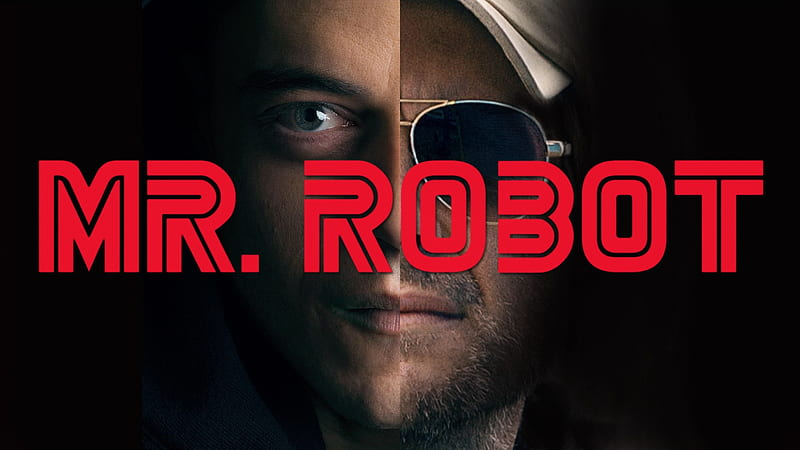
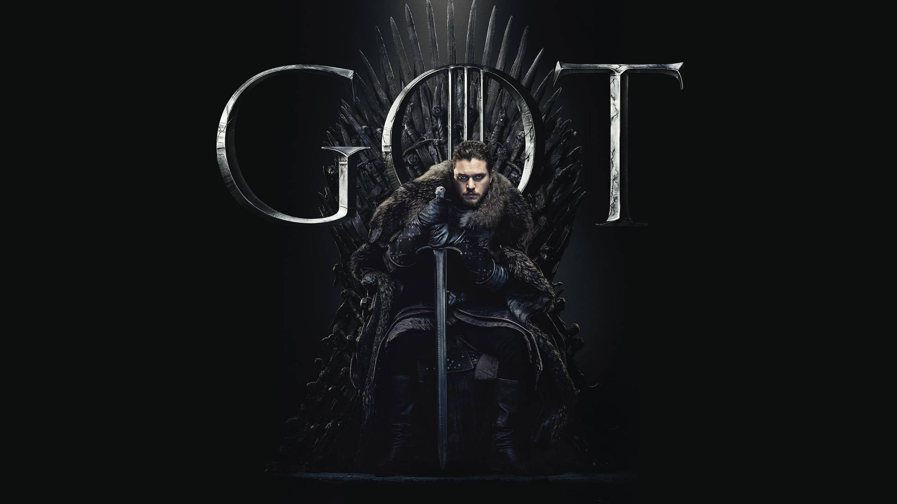
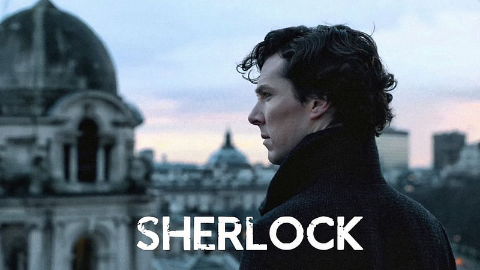
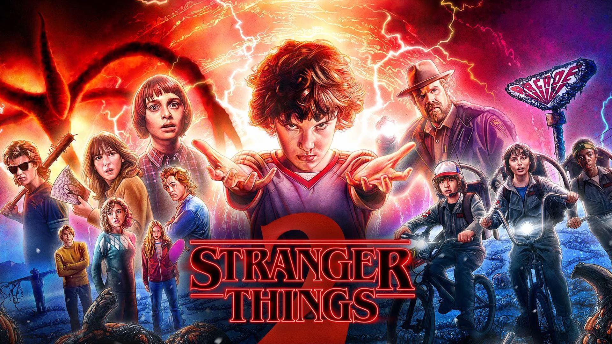
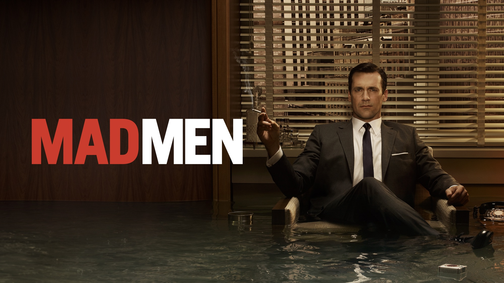
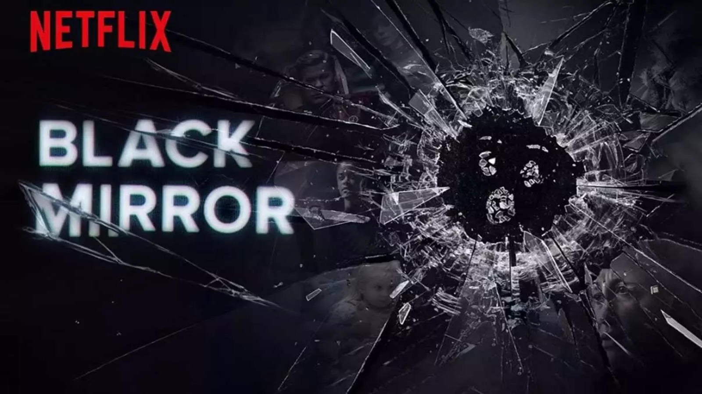
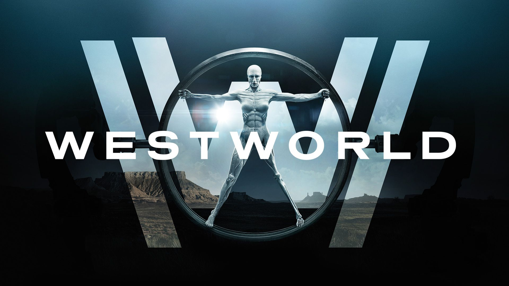

10 Most Binge-worthy TV Shows to Watch
1. Breaking Bad

"Breaking Bad" follows Walter White, a high school chemistry teacher turned methamphetamine manufacturer, as he partners with former student Jesse Pinkman. Facing a terminal cancer diagnosis, Walter's descent into the criminal underworld is driven by his desire to secure his family's future. The show explores themes of morality, consequence, and transformation. Bryan Cranston's portrayal of Walter White earned widespread acclaim and multiple awards.
2. Mr. Robot
"Mr. Robot" centers on Elliot Alderson, a brilliant but troubled cybersecurity engineer and hacker. Elliot is recruited by the enigmatic Mr. Robot to join a group of hacktivists aiming to take down corrupt corporations. The series delves into themes of mental illness, societal disillusionment, and the consequences of living in a digital age. Rami Malek's performance as Elliot received critical praise and a Primetime Emmy Award.
3. Game Of Thrones
"Game of Thrones," based on George R.R. Martin's "A Song of Ice and Fire" novels, is a fantasy epic set in the fictional continents of Westeros and Essos. The series chronicles the power struggles among noble families as they vie for control of the Iron Throne. Known for its complex characters, intricate political plots, and shocking twists, the show became a cultural phenomenon. Its high production values and dramatic storytelling earned it numerous awards and a massive fanbase.
4. Dark

"Dark" is a German science fiction thriller that explores time travel and its impact on a small town called Winden. The story begins with the disappearance of two children and soon reveals a complex web of secrets spanning multiple generations. The series intricately weaves together timelines, paradoxes, and familial connections. With its atmospheric storytelling and intricate plot, "Dark" has been praised for its depth and originality.
5. Sherlock
"Sherlock" is a modern adaptation of Arthur Conan Doyle's classic detective stories, featuring Benedict Cumberbatch as Sherlock Holmes and Martin Freeman as Dr. John Watson. Set in contemporary London, the series showcases Sherlock's unparalleled deductive abilities as he solves complex cases. The dynamic between Holmes and Watson, along with the clever writing and innovative storytelling, has made "Sherlock" a beloved series. Its blend of mystery, drama, and wit has garnered a loyal fanbase.
6. House of Cards

"House of Cards" is a political drama that follows the ruthless rise of Frank Underwood, played by Kevin Spacey, and his equally ambitious wife, Claire, portrayed by Robin Wright. Frank, a cunning and manipulative politician, stops at nothing to achieve power and influence in Washington, D.C. The series delves into themes of corruption, betrayal, and the dark side of American politics. Known for its intense performances and gripping plot, "House of Cards" was a groundbreaking show for streaming television.
7. Stranger Things
"Stranger Things" is a nostalgic sci-fi horror series set in the 1980s in the fictional town of Hawkins, Indiana. The show begins with the mysterious disappearance of a young boy, leading his friends to uncover a government conspiracy involving supernatural forces. With its blend of supernatural elements, coming-of-age themes, and pop culture references, "Stranger Things" has become a beloved series. Its ensemble cast, including standout performances by the young actors, has received widespread acclaim.
8. Mad Men
"Mad Men" is a period drama set in the 1960s, centered on the lives of the employees of the Sterling Cooper advertising agency. The series explores the personal and professional struggles of Don Draper, the enigmatic and charismatic creative director. Known for its meticulous attention to historical detail, complex characters, and social commentary, "Mad Men" offers a vivid portrayal of the American advertising industry and the changing societal norms of the era. The show's writing, acting, and production design have earned it critical acclaim and numerous awards.
9. Black Mirror
"Black Mirror" is an anthology series that explores the dark and often dystopian side of technology and its impact on society. Each standalone episode presents a unique story, often set in the near future, highlighting the potential consequences of technological advancements. The series tackles themes such as surveillance, social media, artificial intelligence, and human behavior. Known for its thought-provoking and sometimes unsettling narratives, "Black Mirror" has garnered critical praise for its originality and social relevance.
10. Westworld
"Westworld" is a sci-fi thriller set in a futuristic theme park where guests can interact with lifelike robots known as hosts. The park allows visitors to indulge in their fantasies without consequences, but things take a dark turn as the hosts begin to gain self-awareness. The series explores themes of artificial intelligence, free will, and the nature of consciousness. With its intricate plot, philosophical questions, and high production values, "Westworld" has captivated audiences and sparked deep discussions.